Install ubuntu(Linux) in your Windows10 pc
Ubuntu is a Linux distribution based on Debian and composed mostly of free and
open-source
software. Ubuntu
is officially released in three editions: Desktop, Server, and Core for Internet of things devices and
robots. All the editions can run on the computer alone, or in a virtual machine.
Requirements
- Good internet connection to download software and Linux ISO. (You can also use some other computer with an internet connection to download these files.)
- Windows system with 4GB of rRAM. (It can work with less RAM as well, but your system will start to lag while using Linux in the virtual machine.)
- Windows system with at least 12 GB of free space.
Step 1: Download and install VirtualBox
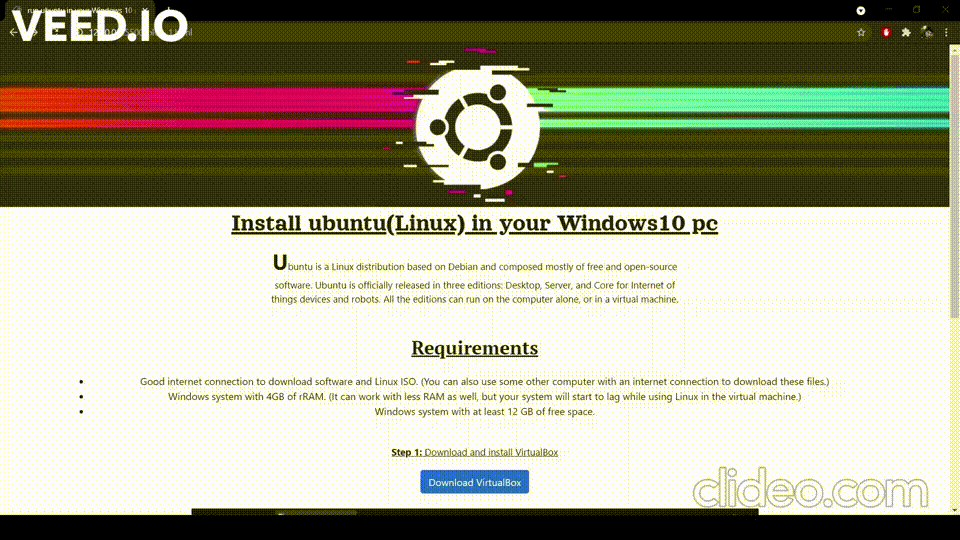
Step 2: Download ubuntu
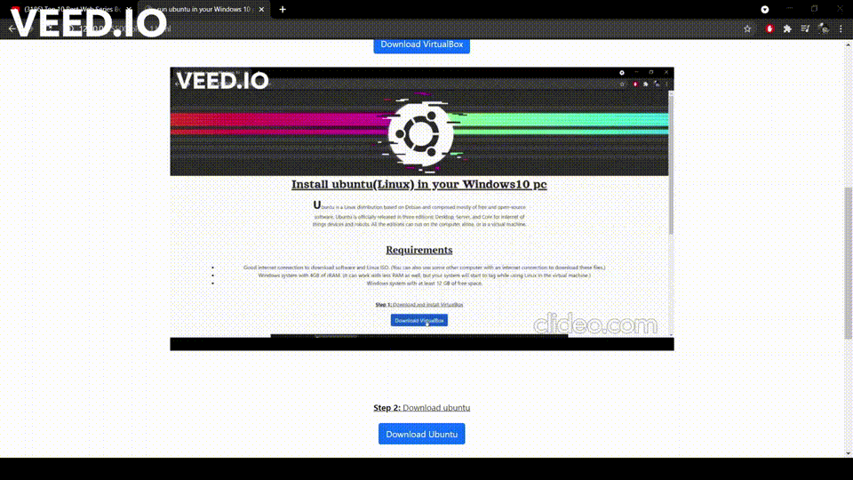
Step 3: install VirtualBox then open as administrator
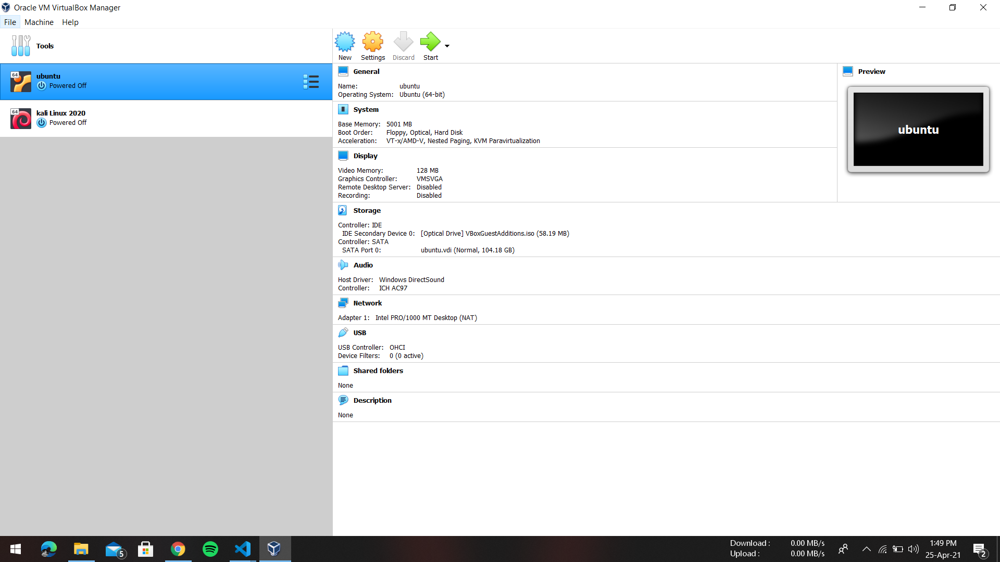
* here i am already install ubuntu and kali linux
Step 4: Click New
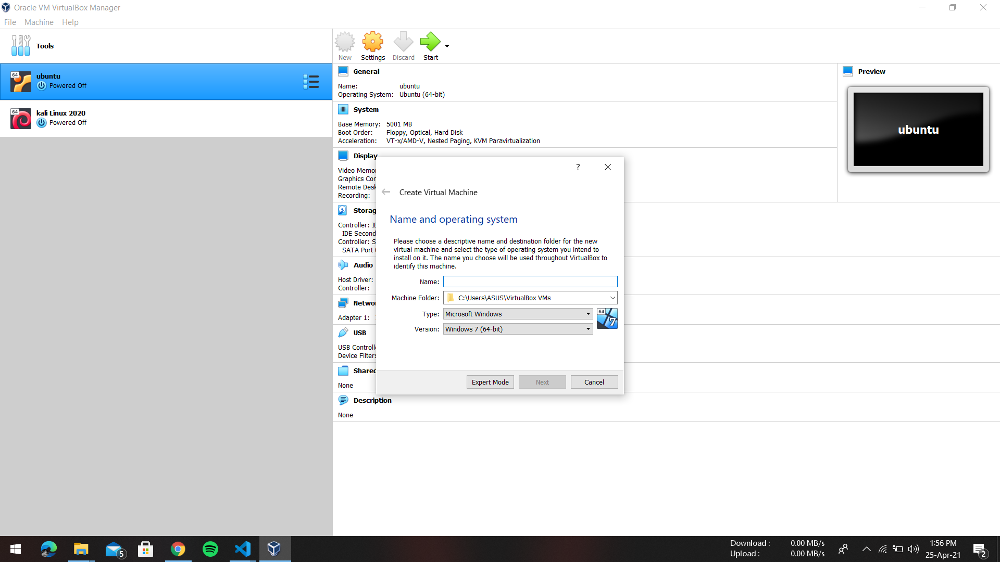
Step 5: set name-"Ubuntu" , type - Linux , version-Ubuntu (64-bit)
Step 6: click next
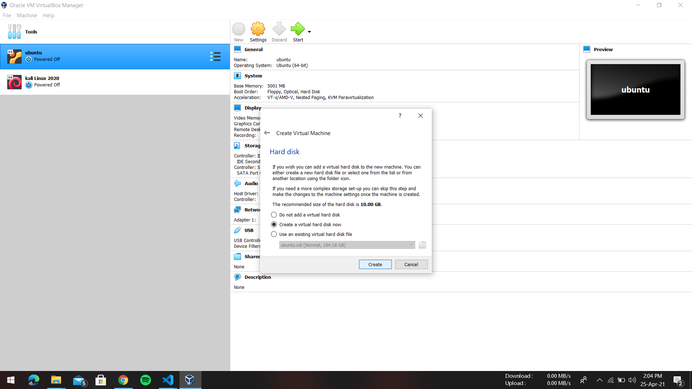
Step 7: set marker upto green mark
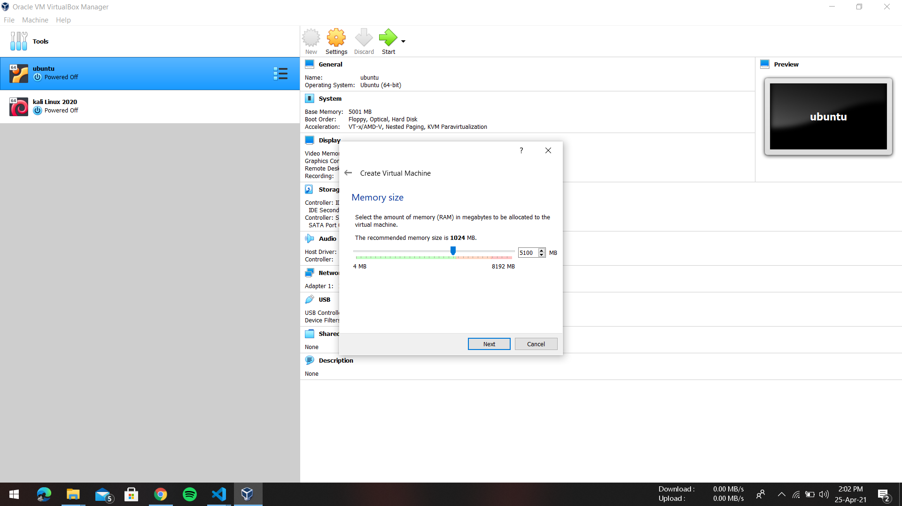
Step 8: Just click Crete
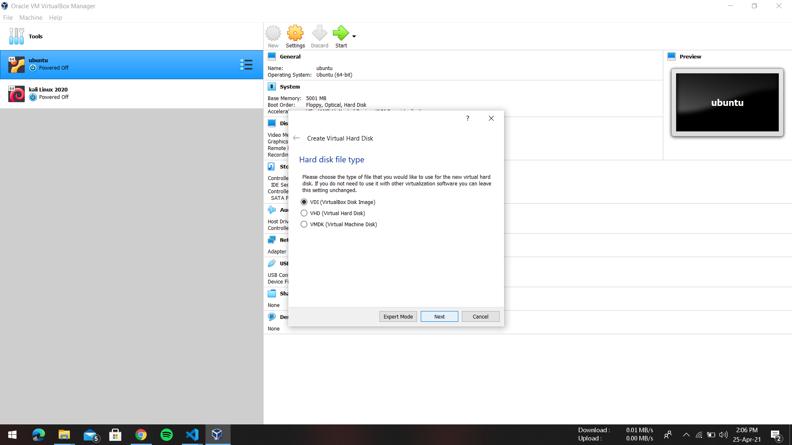
Step 9: Just click dynamic allocation then click Next
Step 10: Just set size 100GB then click Next
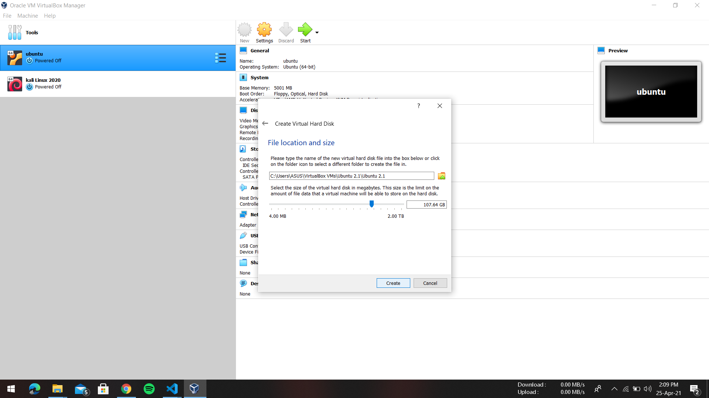
Step 11: Now Good to go
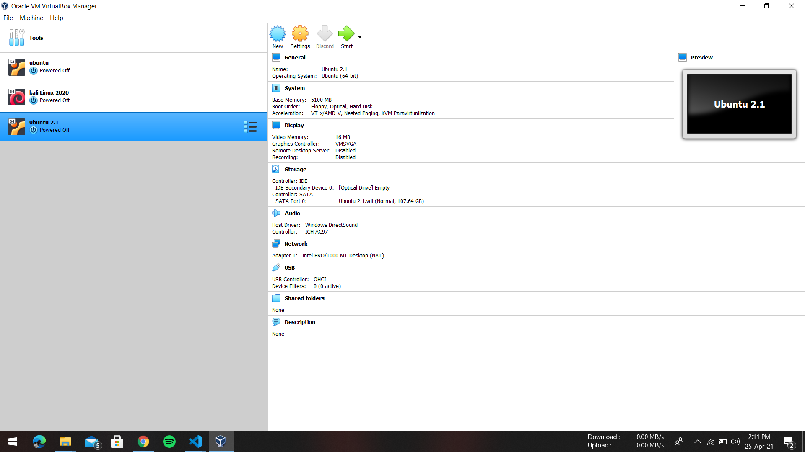
Step 12: Select your ubuntu version > click Start > General > Advanced > share Clipboard - Bidirectional and Drag'n Drop - Bidirectional
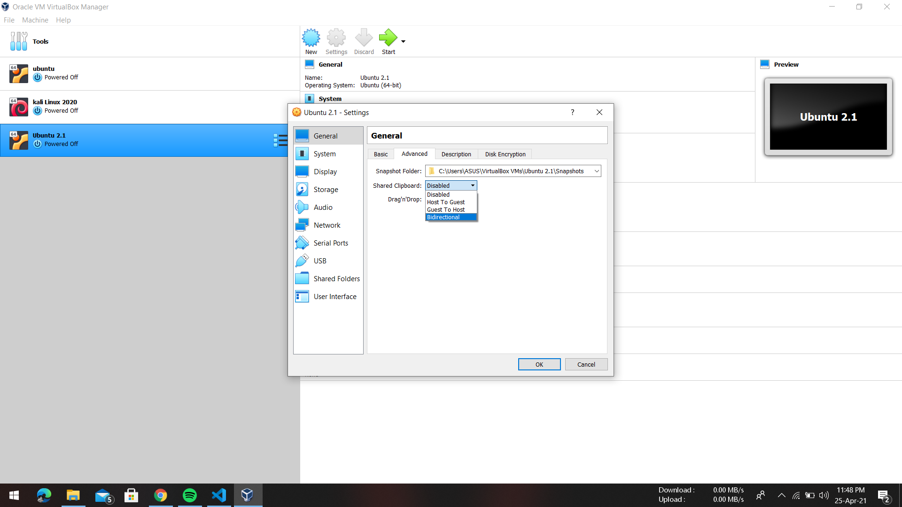
Step 13: Now click System > processor > set upto Green mark
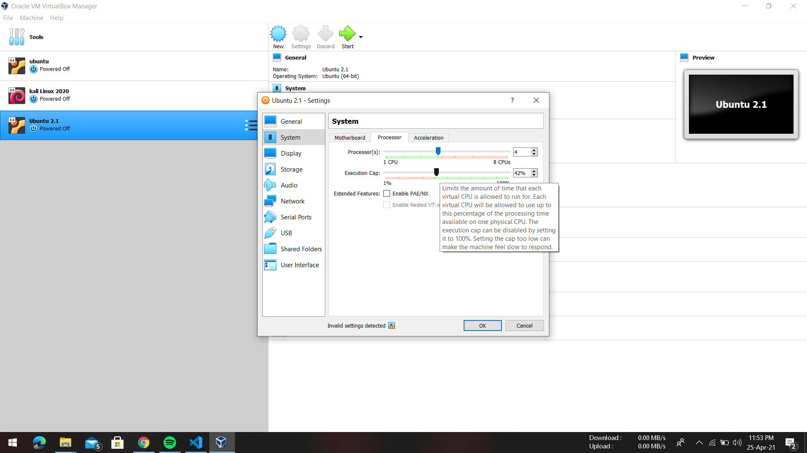
Step 14: Now click storage > control IDE > Optical Driver > Select your Downloaded Ubuntu File Location > Click OK / next
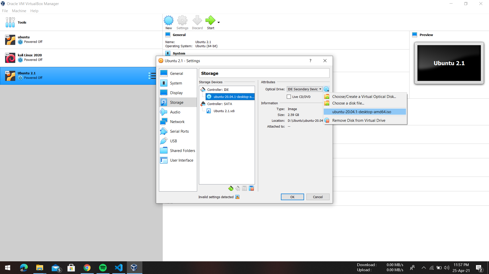
Step 15: Click Start > Start
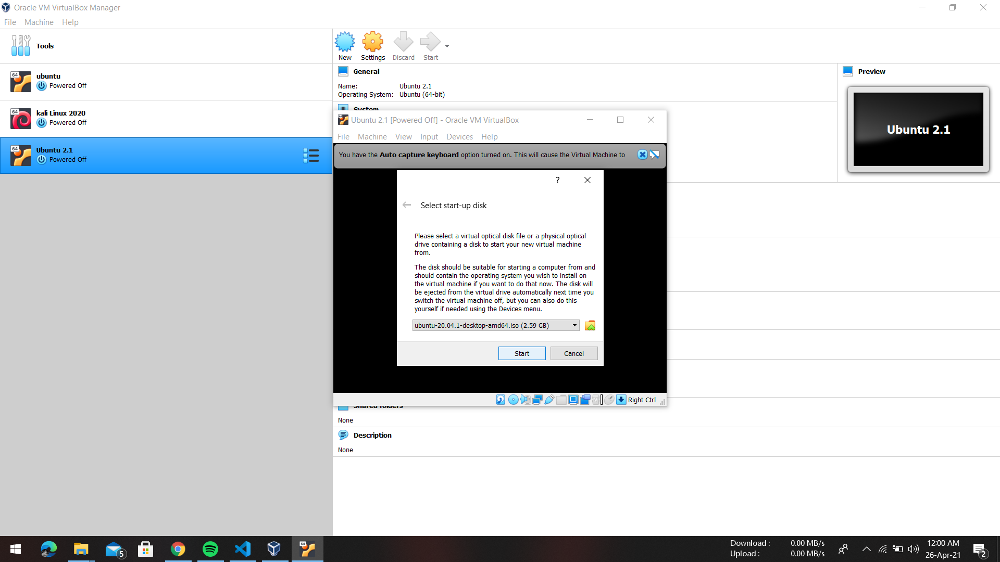
Step 16: Wait !!!(ScreenShots Not Allow in Ubuntu Install Time)

Step 17: Start Screen

Step 18: Click install Ubuntu

Step 19: select your Language > continue

Step 20: select your Keyboard layout > continue

Step 21: click Normal install > click download Update > click Install Third party apps

Step 22: Click Install

Step 23:Click continue

Step 24: Select your city Name
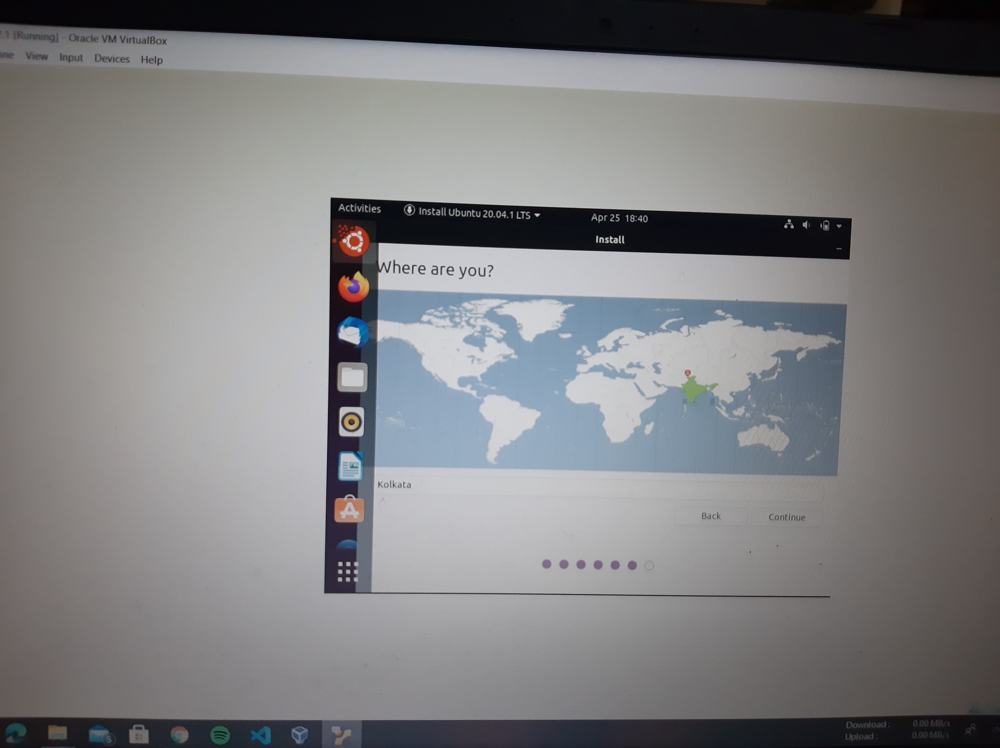
Step 25: set user name and password

Step 26: Wait !!!!!!!!!!!

Step 27: great success!!!!